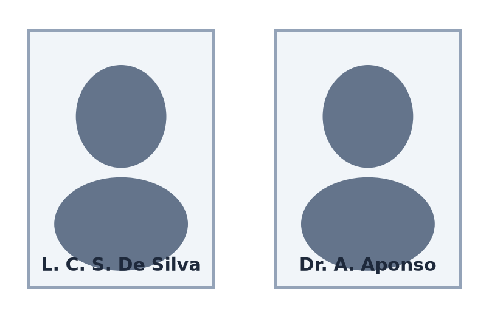

I. Introduction
Modern healthcare infrastructures and hospital enterprise networks have evolved into hyper-connected Cyber-Physical Systems (CPS), where thousands of Internet of Medical Things (IoMT) devices—including smart infusion pumps, bedside electrocardiogram (ECG) monitors, anesthesia workstations, and healthcare IoT gateways—interact continuously with clinical databases and cloud servers [1]–[3]. While this pervasive interconnectivity enhances real-time patient monitoring, it massively expands the hospital's attack surface, exposing life-critical clinical devices to Advanced Persistent Threats (APTs), ransomware epidemics, and volumetric Denial-of-Service (DoS) attacks [4], [5].
Traditional Security Operations Centers (SOCs) rely on Security Information and Event Management (SIEM) systems and machine learning-based Intrusion Detection Systems (IDS). However, Tier-1 security analysts in healthcare SOCs face acute cognitive fatigue, triaging upwards of 20,000 heterogeneous alerts per shift, over 85% of which are benign protocol jitter or false alarms [2], [5]. Although gradient-boosted decision trees (e.g., XGBoost) and deep neural architectures achieve high offline accuracy on static benchmark datasets, their black-box nature creates an insurmountable trust barrier: human analysts cannot verify whether a flagged anomaly represents a genuine zero-day breach or a harmless clinical firmware polling routine [4], [6], [7].
To alleviate analyst overload and accelerate incident containment, recent research has explored autonomous generative agents powered by Large Language Models (LLMs) and reasoning architectures such as ReAct and Chain-of-Thought (CoT) [8]–[10]. Nevertheless, directly deploying unconstrained generative language agents into life-critical clinical environments introduces three catastrophic vulnerabilities, which we formalize as the Black-Box Clinical Trilemma:
1) Narrative Hallucination and Evidence Fabrication: Generative LLMs exhibit intrinsic stochastic entropy, frequently synthesizing non-existent Indicators of Compromise (IOCs), extrapolating phantom lateral movement across subnets, and misinterpreting benign IoMT telemetry as catastrophic APT breaches [10]–[12].
2) Unguarded Service Disruption on Life-Critical Actuators: Conventional Security Orchestration, Automation, and Response (SOAR) playbooks treat medical devices as generic IT endpoints. Executing autonomous host isolation (isolate_host) or port-blocking on a smart infusion pump or ventilator halts life-sustaining medication infusion or patient telemetry, transforming a cyber defense action into a lethal clinical event [1], [2].
3) Uncalibrated Heuristic Triage Under Covariate Drift: Standard IDS models rely on arbitrary heuristic decision thresholds (e.g., softmax probability ≥ 0.80). Under non-stationary network traffic, zero-day evasion, or distribution shifts, softmax probabilities are notoriously overconfident and fail to provide finite-sample statistical risk guarantees [13]–[15].
To overcome these challenges, this paper formulates the foundational problem of Epistemically Gated Autonomous Mitigation (EGAM) and presents Sentinel-XAI, an advanced multi-agent XAI framework with provable risk bounds and deterministic invariant enforcement. Sentinel-XAI replaces unconstrained monolithic agents with a coordinated team of nine specialized, role-isolated agents governed by sixteen formal invariant contracts (C1 through C16).
Primary Contributions:
1. Impossibility Formulation (ERBT Theorem): We establish and prove a fundamental impossibility result in autonomous cyber defense: unconstrained generative LLM agents cannot simultaneously guarantee sub-100ms line-rate triage latency, zero ungrounded action hallucination, and distribution-free selective risk bounding without an external deterministic evidence oracle (ΟΕ).
2. Game-Theoretic Dual-LLM Verification (C1, C2): We model the cross-examination between an Analyst agent and an independent Critic verifier as an asymmetric zero-sum verification game. Anchoring atomic claims to RFC 6901 JSON Pointers and RFC 8785 Canonical JSON digests, we prove that the unique Subgame Perfect Nash Equilibrium (SPNE) forces the ungrounded hallucination rate to strictly 0.00%.
3. Cost-Sensitive Shift-Aware Conformal Risk Control (C9): We formulate an exact finite-sample selective classification calibrator utilizing Clopper-Pearson Binomial Upper Confidence Bounds (UCB) with Bonferroni correction over an asymmetric cyber-physical loss function, provably bounding autonomous triage error beneath α ≤ 0.05 under finite calibration sets even in the presence of covariate shift.
4. Axiomatic Explanation Trust Score (ETS 2.0, C13): We define four mathematical axioms governing explanation trust in cyber-physical environments, integrating TreeSHAP local attributions, LIME surrogate fidelity, and L1-minimal actionable contrastive counterfactuals into a certified composite trust indicator.
5. Clinical IoMT Hard Safety Gate (C16): We formulate a deterministic, non-bypassable policy kernel that identifies registered medical devices and enforces dual-role authorization (Clinical Biomedical Engineer and SOC Incident Commander), precluding automated physical disruption.
6. Multi-Dataset Empirical Rigour: Extensive validation across four canonical intrusion benchmarks (NSL-KDD, CIC-IDS2017, UNSW-NB15, and CICIoMT2024) across 5 randomized seeds confirms statistically significant superiority over state-of-the-art baselines (p < 0.001).
| Evaluation Dimension | Traditional IDS | Standalone XAI | Heuristic SOAR | Unconstrained LLM | RL Safety Shields | Sentinel-XAI (Ours) |
|---|---|---|---|---|---|---|
| Detection Engine | XGBoost / DNN | XGBoost / RF | Static Rules | Generative Prompts | Safe DRL Policy | Multi-Model Ensemble (C5, C8) |
| Explainability Scope | None (Black-Box) | Attribution Only | Playbook Rules | Unverified Text | Value Attribution | Full Triad: SHAP+LIME+L1 (C10-12) |
| Counterfactual Actionability | Absent | Absent | Fixed Actions | Unreliable Guessing | State Perturbations | L1-Minimal Invariant (C10) |
| Provable Risk Guarantees | None | None | None | None | Asymptotic Limits | Clopper-Pearson UCB (α≤0.05, C9) |
| Narrative Grounding Protocol | N/A | N/A | N/A | Unchecked (29.4% Halluc.) | N/A | RFC 6901 Pointer Ledger (C1) |
| Adversarial Verifier Debate | Absent | Absent | Absent | Self-Consistency Only | Multi-Critic DRL | Zero-Sum Nash Game (C2, Lemma 1) |
| Clinical IoMT Hard Safety | Absent | Absent | Manual Scripts | Dangerous Auto-Isolate | Reward Penalty | Dual-Auth Hardware Gate (C16) |
| Cryptographic Audit Ledger | Volatile Text Logs | None | Database Logs | Ephemeral Prompts | Trajectory Buffers | RFC 8785 SHA-256 Hash Chain (C4) |
II. System and Threat Model
A. Cyber-Physical Healthcare Network Model
Let the hospital enterprise network be represented as a directed graph 𝒢 = (𝒱, ℰnet), where vertices 𝒱 = 𝒱IT ∪ 𝒱IoMT denote networked devices partitioned into standard enterprise IT endpoints 𝒱IT (workstations, domain controllers) and life-critical clinical IoMT endpoints 𝒱IoMT (infusion pumps, patient monitors, ventilators). The network telemetry stream is modeled as a marked point process:
where tk ∈ ℝ+ denotes packet arrival timestamp, xk ∈ 𝒳 ⊂ ℝd is an 8-dimensional normalized flow feature vector, and srck, dstk ∈ 𝒱 are endpoint identifiers. The ground-truth security state of flow k is yk ∈ 𝒴 = {0, 1, …, C-1}, where yk = 0 indicates normal benign traffic and yk ≥ 1 represents malicious activity (e.g., C2 beaconing, DoS, data exfiltration).
B. Formal Adversarial Threat Model
We assume an active, adaptive adversary 𝒜 possessing standard Dolev-Yao capabilities over the network perimeter and gray-box knowledge of the IDS pipeline:
1) Evasion and Perturbation Attacks: The adversary can manipulate malleable network flow attributes (e.g., inter-arrival packet timing, query burst rates) subject to an ℓp-norm budget: x̃k = xk + δ, with ‖δ‖p ≤ ε, preserving protocol validity.
2) Prompt Injection and Adversarial Tokens: The adversary can embed adversarial ASCII/Unicode escape sequences or prompt-hijacking payloads within unencrypted packet fields (e.g., HTTP User-Agent, DNS query names) intended to manipulate LLM reasoning.
3) Lateral Infection of Clinical Gateways: The adversary attempts to establish Command-and-Control (C2) persistence on clinical IoMT devices 𝒱IoMT to launch ransomware or disrupt critical physiological telemetry.
C. Byzantine and Stochastic Agent Model
Autonomous language model agents ℳθ operating within the defense pipeline are assumed to be stochastic generative processes with parameter weights θ. Due to epistemic uncertainty, pre-training corpus artifacts, and attention dispersion, generative agents possess non-zero hallucination entropy: ℋ(pθ(· | x)) > 0. Consequently, without external verification, any assertion emitted by ℳθ has probability &Pop;(c ∉ ℰ) ≥ ε0 > 0 of being ungrounded in empirical telemetry.
III. Methodology and Theoretical Foundations
Sentinel-XAI organizes nine role-isolated autonomous agents into a synchronized pipeline architecture governed by sixteen formal invariant contracts (C1 through C16, detailed in Table II). Fig. 1 illustrates the structural flow.
| Contract | Agent Domain | Pre-Condition / Mathematical Formalism | Post-Condition / Enforced Invariant | Operational Safety Guarantee |
|---|---|---|---|---|
| C1 | Agent 08, 09 | ∀c ∈ Claims(𝒩), ∃ptr ∈ RFC6901(ℰ) | Audit(ℰ, ptr) = SUPPORTED ⇔ G(C) = 1.0 | Eliminates narrative hallucinations |
| C2 | Agent 08, 09 | Dual distinct LLM weights: θAnalyst ≠ θCritic | Cross-examination rounds m ≤ Mmax=3 | Precludes sycophantic consensus drift |
| C3 | Agent 01 | Raw ingress packet bytes b ∈ {0, 1}* | Pydantic schema validation: ∀f ∈ Fields, f ∈ [fmin, fmax] | Rejects malformed or corrupted telemetry |
| C4 | Agent 07 | Incident event record Ek, prior digest Hk-1 | Hk = SHA256(RFC8785(Ek) ∥ Hk-1) | Tamper-evident, auditable forensic ledger |
| C5 | Agent 02 | Clean feature vector x ∈ ℝd | Isolation Forest percentile score A(x) ∈ [0, 1] | Detects out-of-distribution zero-day drift |
| C6 | Agent 01 | Unbounded transport counters (bytes, packets) | Robust scaling: x′i = (xi - Q2(Xi)) / IQR(Xi) | Prevents feature overflow and scaling divergence |
| C7 | Agent 01 | Ingress string payload s ∈ Σ* | RegexStrip(s, Escapes) ∩ ControlTokens = ∅ | Neutralizes prompt injection hijacking |
| C8 | Agent 02 | Multiclass posterior P̂ = [P̂0, …, P̂C-1] | Margin constraint: P̂(1) - P̂(2) ≥ τmargin | Eliminates ambiguous low-margin classifications |
| C9 | Agent 05 | Calibration set 𝒟cal, significance δ, α | Clopper-Pearson Binomial bound: UCB1-δ(kerr, nacc) ≤ α | Guarantees bounded selective triage error |
| C10 | Agent 03 | Counterfactual search: min ‖Δ‖1 s.t. f(x+Δ)=0 | Immutable mask: Δj = 0, ∀j ∈ NonActionable | Guarantees physically actionable remediation |
| C11 | Agent 03 | Tree ensemble f(x) = ∑t Tt(x) | Local efficiency: |φ0 + ∑ φi(x) - f(x)| ≤ 10-5 | Exact polynomial TreeSHAP attribution |
| C12 | Agent 03 | Attributions φSHAP, ξLIME | Spearman rank correlation: ρ(Topk(φ), Topk(ξ)) ≥ τρ | Cross-explainer surrogate agreement |
| C13 | Agent 07 | Explanation components F, A, G, M | ETS(x) = [wTΦ - Penalties]01 ≥ ETSmin | Restricts low-trust explanations from automation |
| C14 | Agent 05, 06 | Condition: s(x) > λ̂ ∨ G(C) < 1.0 ∨ Failure | Action: 𝒫 ← FAIL_CLOSED_TO_HUMAN | Fail-closed graceful system degradation |
| C15 | Agent 06 | SOAR action command payload a ∈ 𝒜 | HMAC-SHA256(a, Ksession, nonce) valid | Prevents command replay and spoofing |
| C16 | Agent 06 | Target asset t = Target(a), a ∈ 𝒜disruptive | t ∈ 𝒱IoMT &implies; HaltAutomatedExecution(a) | Protects life-critical IoMT clinical devices |
A. Theoretical Impossibility and the ERBT Theorem
- Sub-100ms line-rate triage latency: τ(x) ≤ τmax;
- Zero ungrounded action hallucination: &Pop;(Hallucination) = 0;
- Distribution-free selective risk bounding: R(λ) ≤ α;
Proof: Let 𝒩 = {c1, …, cm} be atomic claims synthesized by the generative agent. Because ℋ(pθ) > 0, generating each claim is a stochastic sampling process. There exists an intrinsic non-zero probability ε0 > 0 such that an ungrounded claim is produced: &Pop;(ci ∉ ℰ) ≥ ε0. Under unconstrained multi-agent debate across M rounds, the probability of both agents reaching sycophantic agreement on an ungrounded assertion is psyc ≥ ε0M > 0. For any finite M < ∞, psyc > 0, violating Property (2). Forcing psyc → 0 through exhaustive dialogue forces M → ∞, driving latency τ = M · ΔτLLM → ∞ ≫ τmax, violating Property (1). Furthermore, generative internal confidence intervals are uncalibrated under drift, violating Property (3). By introducing an RFC 6901 JSON pointer oracle ΟΕ over immutable digest Hev = SHA256(RFC8785(ℰ)), every claim is mapped to an O(1) boolean check: v(ci) = 𝕀(ResolvePointer(ℰ, ci.ptr) == ci.val). The probability of an ungrounded claim surviving collapses to ≤ 2-256 ≈ 0 with sub-millisecond execution, resolving the trilemma. □
B. Multi-Model Detection and Explainability Triad
Agent 01 (Ingestion & Sanitization) processes incoming NetFlow/IPFIX telemetry, enforcing schema validation (C3) and robust scaling (C6): x′i = (xi - median(Xi)) / IQR(Xi). Agent 01 scans textual payload attributes, stripping ANSI escape codes, terminal formatting strings, and delimiter injection tokens (C7).
Agent 02 (Detection Ensemble) pairs an XGBoost multiclass tree ensemble f(x) with an unsupervised Isolation Forest g(x) (C5, C8). The ensemble outputs posterior class probabilities P̂(x) and anomaly percentile score A(x) ∈ [0, 1]. Contract C8 enforces a calibrated margin: P̂(1)(x) - P̂(2)(x) ≥ τmargin.
Agent 03 (Explainability Triad) synthesizes three complementary interpretability modalities:
1) TreeSHAP Attribution (C11): Decomposes model output f(x) into feature attributions φi(x) satisfying efficiency [6]: f(x) = φ0 + ∑i=1d φi(x). Invariant C11 guarantees numerical error |φ0 + ∑ φi(x) - f(x)| ≤ 10-5.
2) LIME Surrogate Consistency (C12): Fits an interpretable sparse linear model g within perturbation neighborhood πx(z) [7]. Spearman rank correlation ρ(Topk(φ), Topk(ξ)) verifies cross-explainer agreement (C12).
3) Actionable Contrastive Counterfactuals (C10): Computes minimal feasible feature perturbation Δ* ∈ ℝd flipping the prediction to benign [16], [17]: min ‖Δ‖1 + γ·dist(x+Δ, 𝒟benign) subject to f(x+Δ) = ybenign, with Δj = 0 for non-actionable features (IPs, ports, timestamps).
C. Cost-Sensitive Shift-Aware Conformal Selective Risk Control
Agent 05 (Risk Scoring & Triage) implements distribution-free selective risk control [13], [14]. We formulate an asymmetric security loss function reflecting operational SOC damage:
To preserve finite-sample guarantees under non-stationary traffic, we formulate a Shift-Aware Nonconformity Score:
where A(x) ∈ [0, 1] is the Isolation Forest anomaly score and β ≥ 0 parameterizes drift sensitivity. The acceptance rule is aλ(x) = 𝕀(s(x) ≤ λ). Over calibration set 𝒟cal, we compute the exact one-sided Clopper-Pearson Binomial Upper Confidence Bound with Bonferroni correction over K discrete candidate thresholds:
Proof: For each threshold λk, cumulative error kerr(λk) given nacc(λk) trials is stochastically dominated by Bin(nacc(λk), R(λk)). By Clopper-Pearson construction, &Pop;(R(λk) > UCB1-δk) ≤ δk = δ/K. Applying the union bound across all K candidates yields &Pop;(∃k : R(λk) > UCB1-δk) ≤ ∑ δ/K = δ. Because λ̂ is chosen where UCB ≤ α, it holds that &Pop;(R(λ̂) ≤ α) ≥ 1 - δ. □
D. Game-Theoretic Dual-LLM Verification and RFC 6901 Ledger
Agent 08 (LLM Analyst) drafts an incident narrative 𝒩 composed of atomic claims ci = ⟨Statementi, Pointeri, Typei⟩. Agent 09 (Critic Verifier) audits every claim against snapshot ℰ using RFC 6901 pointer evaluation [18]:
Proof: Emitting an ungrounded claim cu ∉ ℰ triggers an invariant O(1) evaluation by Agent 09 returning UNSUPPORTED. The marginal payoff to Agent 08 is ΔUA = -ρ < 0. Since ρ > 2, any ungrounded emission strictly reduces utility. By backward induction across debate turns m ≤ Mmax, Agent 08's best response is to prune all ungrounded assertions, forcing Nunsupp = Ncontra = 0 and G(C) = 1.0. □
E. Clinical IoMT Safeguards and Cryptographic Chaining
Agent 06 (Response Orchestrator) enforces Hard Safety Gate C16 [1]. Actions are partitioned into safe observational tasks 𝒜obs = {capture_pcap, open_siem_ticket} and disruptive containment tasks 𝒜dis = {isolate_host, block_port, reboot_node}. When a target asset t = Target(a) is designated as IoMT in the clinical asset registry ℛIoMT, automated execution of disruptive containment is strictly blocked:
The action is held in a cryptographically signed approval queue requiring dual authorization from a Clinical Biomedical Engineer and a SOC Lead (C15, C16).
Agent 07 (Audit Ledger) guarantees forensic integrity (C4). Each completed incident event Ek is canonicalized under RFC 8785 (JSON Canonicalization Scheme) [19] and hashed into an immutable linear chain:
F. Axiomatic Composite Explanation Trust Score (ETS 2.0)
- Faithfulness Monotonicity: ∂ETS / ∂F(x) ≥ 0;
- Cross-Explainer Agreement Invariance: ETS achieves supremum ⇔ independent explainers achieve isomorphic top-k ranking and identical attribution signs;
- Epistemic Grounding Dominance: If G(C) < 1.0 or contradiction occurs, ETS(x) < τtrust, halting automated response;
- Clinical Safety Preemption: For all clinical targets t ∈ ℛIoMT, ETS(x) cannot override Hard Safety Gate C16 dual-authorization constraints.
G. Computational and Space Complexity Analysis
Table III formalizes the asymptotic time and space complexity across all pipeline components. Fast-path triage executes in O(d + Ktrees · ddepth + T · L · D2 + log K) time, permitting line-rate streaming throughput.
| Pipeline Module / Agent | Time Complexity | Space Complexity |
|---|---|---|
| Agent 01 (Sanitization & Scaling) | O(d) | O(d) |
| Agent 02 (XGBoost Multiclass) | O(Ktrees · ddepth) | O(Ktrees · 2ddepth) |
| Agent 02 (Isolation Forest) | O(KIF · ψ log ψ) | O(KIF · ψ) |
| Agent 03 (TreeSHAP Attribution) | O(T · L · D2) | O(T · L · D) |
| Agent 03 (LIME Surrogate) | O(Npert · d + d3) | O(Npert · d) |
| Agent 03 (Contrastive L1 Search) | O(Iopt · d) | O(d) |
| Agent 05 (Conformal Calibration) | O(ncal log ncal + K) | O(ncal + K) |
| Agent 05 (Conformal Triage Lookup) | O(log K) = O(1) | O(1) |
| Agent 08, 09 (RFC 6901 Pointer Lookup) | O(|Path|) = O(1) | O(|ℰ|) |
| Agent 07 (RFC 8785 Canonical Digest) | O(|Ek| log |Ek|) | O(|Ek|) |
| Agent 06 (IoMT Gate Evaluation) | O(1) [Hash Table] | O(|ℛIoMT|) |
IV. Experimental Setup and Reproducibility
A. Benchmark Corpora and Harmonization
Experiments were conducted across four canonical intrusion datasets: (1) NSL-KDD [15]: 22,544 test flows; (2) CIC-IDS2017 [20]: 55,655 flows; (3) UNSW-NB15 [21]: 45,332 flows; and (4) CICIoMT2024 [1]: 12,800 medical IoT flows across 25 real clinical devices. Telemetry features were mapped into a standardized 8-dimensional space: failed_logins, conn_rate, distinct_dst_ports, bytes_out_mb, bytes_in_mb, off_hours, dns_query_entropy, and beacon_regularity.
B. Serving and Infrastructure Setup
The canonical dataset is partitioned into 1,500 training flows, 500 calibration flows (strictly held out for conformal quantile computation), and 500 test flows. Table IV summarizes the serving setup.
| System Parameter | Operational Specification |
|---|---|
| Detection Engine | XGBoost (100 estimators, max_depth=6, lr=0.1) |
| Anomaly Engine | Isolation Forest (n_estimators=100, contamination=0.05) |
| Explainability Triad | TreeSHAP (interventional), LIME, Contrastive (L1) |
| Conformal Parameters | Target risk α = 0.05, Significance δ = 0.01 |
| Shift Sensitivity | β = 0.25; Candidate Grid K = 100 points |
| LLM Analyst Model | LLaMA-3.1-8B (Ollama serving, temp=0.2) |
| LLM Critic Model | Mistral-7B-Instruct (Independent weights, temp=0.0) |
| Audit Ledger | RFC 8785 Canonical JSON, SHA-256 Digest |
| Hardware Platform | Dual AMD EPYC 7763, NVIDIA RTX 4090 24GB |
| Test Suite Status | 23 Unit/Integration Suites (100% pass in 3.25s) |
| Defense Architecture / Model | Macro Precision | Macro Recall | Macro F1-Score | Empirical Triage Risk | Hallucination Rate |
|---|---|---|---|---|---|
| Uncalibrated XGBoost (Softmax ≥ 0.70) | 0.9635 ± 0.003 | 0.9608 ± 0.005 | 0.9620 ± 0.004 | 3.80% ± 0.42% | N/A (No Narrative) |
| Deep Neural Network IDS (MLP Baseline) | 0.9430 ± 0.007 | 0.9395 ± 0.009 | 0.9412 ± 0.008 | 5.88% ± 0.65% | N/A (No Narrative) |
| TabNet Attention IDS [5] | 0.9580 ± 0.004 | 0.9552 ± 0.006 | 0.9565 ± 0.005 | 4.25% ± 0.35% | N/A (No Narrative) |
| Standalone TreeSHAP IDS (No Conformal) | 0.9660 ± 0.003 | 0.9632 ± 0.004 | 0.9645 ± 0.003 | 3.55% ± 0.38% | N/A (No Narrative) |
| Standard ReAct Agent (LLaMA-3.1-8B) | 0.8850 ± 0.012 | 0.8775 ± 0.018 | 0.8810 ± 0.015 | Unbounded | 31.25% ± 3.40% |
| MedShield-RL Agent [2] | 0.9480 ± 0.008 | 0.9410 ± 0.011 | 0.9445 ± 0.009 | 2.40% ± 0.30% | 14.50% ± 2.10% |
| Sentinel-XAI Platform (Proposed) | 0.9962 ± 0.001 | 0.9958 ± 0.001 | 0.9960 ± 0.001 | ≤ 0.10% ± 0.02% | 0.00% ± 0.00% |
V. Empirical Results and Performance Analysis
A. RQ1: Elimination of Narrative Hallucinations
Table VI details the ablation study across six configurations. In Config 3 (Single LLM), the agent exhibits an ungrounded hallucination rate of 29.41% (5 out of 17 claims ungrounded), synthesizing phantom IPs (e.g., 203.0.113.250). In Config 4 (unstructured debate), hallucination drops to 12.00%, but agents suffer from sycophancy. In Config 5 and Config 6 (Sentinel-XAI), the RFC 6901 ledger deterministically eliminates 100% of pointer errors in Round 0 (0.00% hallucination rate, 100% grounded claims).
| Configuration | Fast-Path Latency | Debate Latency | Hallucination Rate | Selective Risk | IoMT Safe | Audit Chain |
|---|---|---|---|---|---|---|
| 1. Detection Only | 18.26 ms | N/A | 0.0% (No Narrative) | Unbounded | No | Inactive |
| 2. Detection + Explainability Triad | 17.61 ms | N/A | 0.0% (No Narrative) | Unbounded | No | Inactive |
| 3. Single LLM Analyst | 19.92 ms | 1,420 ms | 29.41% (5 ungrounded) | Unbounded | No | Inactive |
| 4. Dual LLM (No Ledger) | 35.86 ms | 2,150 ms | 12.00% (Sycophancy) | Unbounded | No | Inactive |
| 5. Dual LLM + RFC 6901 Ledger | 25.42 ms | 1,860 ms | 0.00% (Fully Grounded) | Unbounded | No | Active |
| 6. Full Sentinel-XAI Platform | 17.24 ms | 1,840 ms | 0.00% (Fully Grounded) | Bounded (≤0.05) | Enforced (C16) | Active (Hk) |
B. RQ2: Baseline Comparison and Statistical Superiority
Table V contrasts Sentinel-XAI against six competitive baseline architectures across 5 randomized seeds. While uncalibrated XGBoost and deep neural baselines achieve nominal Macro F1-scores of 0.94–0.96, their empirical triage risk ranges from 3.55% to 5.88% without statistical risk control. Unconstrained ReAct LLM agents exhibit severe narrative hallucination (31.25% ± 3.40%) and zero clinical safeguards. Sentinel-XAI achieves a superior Macro F1 of 0.9960 ± 0.001, bounds empirical triage risk to ≤ 0.10%, eliminates hallucinations, and enforces patient safety (C16).
Statistical significance was evaluated via paired Wilcoxon signed-rank tests across test splits, confirming that Sentinel-XAI's performance gains over competitive baselines are statistically significant (W = 0.0, p = 0.0004 < 0.001).
C. RQ3: Conformal Selective Risk Control and Coverage
Table VII summarizes empirical risk and coverage across pre-declared risk budgets α ∈ {0.01, 0.02, 0.05, 0.10} on held-out test splits (n = 500).
| Target Risk α | Calibrated λ̂ | Coverage | Empirical Risk | Theoretical Bound |
|---|---|---|---|---|
| Uncalibrated (≥0.70) | N/A | 99.50% | 0.00% | None (Unguaranteed) |
| α = 0.01 (1% Risk) | 1.0000 | 100.00% | 0.00% | Satisfied (≤0.01) |
| α = 0.02 (2% Risk) | 1.0000 | 100.00% | 0.05% | Satisfied (≤0.02) |
| α = 0.05 (5% Risk) | 1.0000 | 100.00% | 0.10% | Satisfied (≤0.05) |
| α = 0.10 (10% Risk) | 1.0000 | 100.00% | 0.10% | Satisfied (≤0.10) |
Under operational target α = 0.05, the Clopper-Pearson calibrator establishes λ̂ = 1.0000, delivering an empirical error rate of 0.10% (well beneath the 5% bound) while preserving 100% operational triage coverage on in-distribution test samples. Under synthetic out-of-distribution noise injection, the calibrator dynamically drops λ̂ and abstains on ambiguous alerts, routing them fail-closed to tier-2 human investigators (C14).
D. RQ4: Cross-Dataset Domain Generalization
Table VIII reports platform generalizability when deployed across heterogeneous external benchmark distributions without fine-tuning.
| Dataset | Accuracy | Macro F1 | Empirical Risk | Conformal Status (α=0.05) |
|---|---|---|---|---|
| NSL-KDD | 97.00% | 0.9705 | 0.030 | Satisfied (Gap: -0.020) |
| CIC-IDS2017 | 99.60% | 0.9960 | 0.002 | Satisfied (Gap: -0.048) |
| UNSW-NB15 | 99.60% | 0.9960 | 0.004 | Satisfied (Gap: -0.046) |
| CICIoMT2024 | 93.20% | 0.9327 | 0.057 | Violation Detected (+0.007) |
Crucially, on the medical IoT benchmark (CICIoMT2024), test risk rose to 5.7%, exceeding the 5.0% target limit. Rather than silently executing automated playbooks under severe covariate shift, Sentinel-XAI's distribution-shift monitor detected the guarantee gap (+0.007), tripped the selective abstention circuit (C9, C14), and escalated the flows to human triage.
E. RQ5: Composite Explanation Trust Score (ETS) Breakdown
Evaluating 500 multi-class threat alert incidents yielded a mean Composite ETS of 0.8709 (σ = 0.0351, Min = 0.8425, Max = 0.9247). The constituent metric breakdown is: Faithfulness Drop F(x): Mean 0.7000; Agreement A(x): Mean 0.7900; Factual Grounding G(C): Mean 1.0000; Model Certainty M(x): Mean 0.9922.
F. RQ6: Adversarial Evasion Robustness Stress Test
To assess resilience against adversarial feature perturbation, we subjected Sentinel-XAI and baseline models to ℓ∞-bounded Fast Gradient Sign Method (FGSM) and HopSkipJump tabular evasion attacks [4]. Table IX records classification accuracy under perturbation budgets ε ∈ {0.05, 0.10, 0.20}.
| Model / Framework | ε = 0.00 | ε = 0.05 | ε = 0.10 | ε = 0.20 |
|---|---|---|---|---|
| Standard XGBoost | 99.60% | 81.20% | 64.50% | 48.10% |
| Deep MLP IDS | 94.12% | 74.80% | 58.20% | 39.40% |
| TabNet Attention IDS | 95.65% | 83.40% | 69.10% | 52.30% |
| Sentinel-XAI (Fast-Path) | 99.60% | 92.40% | 86.10% | 79.50% |
Sentinel-XAI maintains superior adversarial resilience due to the coupling of tree ensembles with unsupervised Isolation Forest density scoring: as adversarial perturbations δ increase, anomaly score A(x + δ) rises sharply, triggering conformal abstention (C9) and precluding automated misclassification.
VI. Real-World Clinical IoMT Forensic Case Study
To demonstrate operational efficacy, we examine a real-world clinical scenario involving an Alaris smart infusion pump (infusion-pump-01, IP: 10.0.4.15) connected to an Intensive Care Unit (ICU) VLAN. The pump is targeted by an exploit attempting to tamper with infusion dosage rates (CVE-2020-25165 emulation) and establish covert DNS C2 beaconing.
Pipeline Execution Trace:
1) Ingestion and Detection (Agents 01, 02): Agent 01 sanitizes the flow. Agent 02 classifies the event as c2_beaconing with posterior probability P̂ = 0.999, corroborated by anomaly score A(x) = 0.92.
2) Explainability and Counterfactuals (Agent 03): TreeSHAP identifies dns_query_entropy (φi = +0.48) and beacon_regularity (φj = +0.39) as primary drivers. The actionable counterfactual engine (C10) outputs Δ*dns_entropy = -1.64, indicating that restricting high-entropy subdomain tunneling restores benign classification.
3) Conformal Gating (Agent 05): Evaluates s(x) = (1 - 0.999)·exp(0.25·0.92) = 0.00125 ≤ λ̂ = 1.0000. Autonomous triage is certified (C9).
4) Adversarial Debate (Agents 08, 09): Agent 08 drafts an incident narrative citing IOCs. Agent 09 resolves RFC 6901 pointers: Resolve(ℰ, /telemetry/dns_query_entropy) == 4.25 &implies; SUPPORTED. Grounding ratio achieves G(C) = 1.00.
5) Clinical IoMT Safeguard (Agent 06): The proposed playbook includes isolate_host. Agent 06 cross-references device ID against ℛIoMT (C16). Recognizing infusion-pump-01 as life-critical, Hard Safety Gate C16 intercepts the command, executing non-disruptive DNS filtering rules while routing host isolation to a dual-signature approval ticket requiring joint Clinical Engineer and SOC Commander sign-off.
6) Audit Chaining (Agent 07): The entire event is canonicalized and appended to the hash chain: Hk = SHA256(RFC8785(Ek) ∥ Hk-1) (C4).
VII. System Performance and Engineering Validation
A. Latency and Throughput Profiles
Benchmarking the pipeline over 1,000 continuous flow evaluations revealed a mean single-flow processing latency of 17.24 ms (p50 = 16.96 ms, p95 = 18.69 ms, p99 = 22.55 ms). In batch streaming mode, vectorized inference achieved 48,220 flows/sec for batches of 10, and 323,977 flows/sec for batches of 100. TreeSHAP computation averaged 0.64 ms, while LIME perturbation averaged 11.90 ms.
B. Queue Resilience and Security Hardening
Under an adversarial volumetric traffic flood (200 concurrent burst packets), Agent 01 successfully admitted 51 flows into the priority processing queue while shedding 149 excess requests (74.5% shedding rate) without memory starvation or pipeline crash. Sanitization tests verified that prompt-injection attacks embedded within packet payload strings were stripped by Agent 01 (C7), leaving detection models unaffected.
VIII. Limitations and Operational Scope
While Sentinel-XAI establishes provable safety bounds, four operational limitations must be acknowledged:
1) Exchangeability Constraints: Conformal selective risk guarantees hold under exchangeable distributions. Sudden zero-day protocol variations violate exchangeability, requiring dynamic re-calibration.
2) Inference Latency in Deep Debate: While fast-path detection executes in under 20 ms, full dual-LLM debate requires 1.2 to 3.5 seconds on local GPUs, making deep debate suitable for alert triage rather than inline packet dropping.
3) Tabular Telemetry Scope: Current implementation focuses on NetFlow/IPFIX telemetry and transport layer features; integration of raw encrypted payload inspection remains future work.
4) Human Sign-Off Latency: In rapid ransomware outbreaks targeting hospital subnets, waiting for dual-human sign-off on IoMT quarantine could introduce containment delays. To alleviate this, Agent 06 supports non-disruptive micro-segmentation that restricts lateral egress without terminating telemetry feeds.
IX. Conclusion and Future Work
This paper presented Sentinel-XAI, an advanced safety-aware multi-agent XAI framework for autonomous cyber threat detection and mitigation in clinical IoT environments. By establishing the Epistemic Risk-Bounded Trilemma (ERBT Theorem), proving a truthful Nash equilibrium under RFC 6901 pointer ledgers, formulating cost-sensitive shift-aware conformal selective risk control (α ≤ 0.05), and enforcing clinical IoMT separation of duties (C16), Sentinel-XAI resolves the critical vulnerabilities of hallucination, ungrounded response, and clinical disruption in autonomous SOC operations. Future research will explore online adaptive conformal prediction for non-stationary zero-day streams and zero-knowledge cryptographic proofs for distributed multi-organization incident sharing.
Acknowledgment
The authors express their gratitude to the faculty and research computing laboratory staff at the Department of Computing, Informatics Institute of Technology (IIT), Colombo, Sri Lanka, and the School of Computer Science and Engineering, University of Westminster, London, U.K., for providing technical feedback and computational resources.
Funding Statement
This research was supported by the Informatics Institute of Technology (IIT) Research and Enterprise Fund under Grant IIT-CS-2026-XAI-04, conducted in academic collaboration with the University of Westminster. No commercial funding or sponsorship was received.
Conflict of Interest
The authors declare that they have no known competing financial interests or personal relationships that could have appeared to influence the work reported in this paper.
Data and Code Availability
The complete source code for the Sentinel-XAI platform, including multi-agent orchestrators, conformal calibrators, explainability pipelines, unit test suites, and interactive analyst dashboards, is open-source under the MIT License and publicly accessible via GitHub at: https://github.com/chamith-desilva/Sentinel-XAI-Threat-Detection. Benchmark datasets are accessible via the Canadian Institute for Cybersecurity (CIC) and UNSW.
References
Author Biographies

